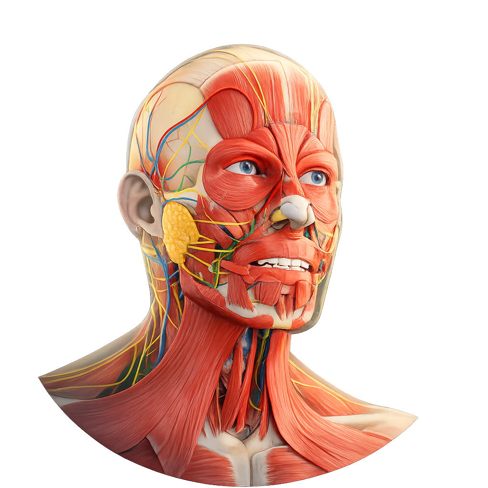
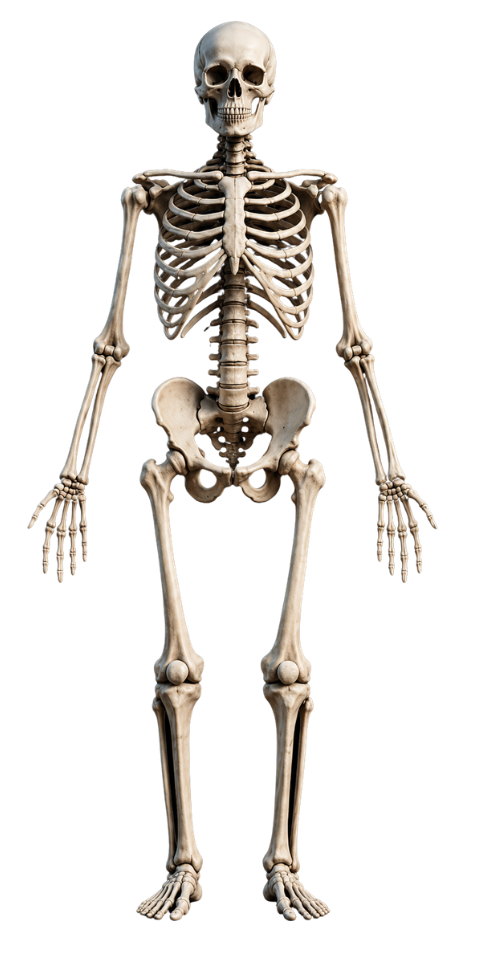
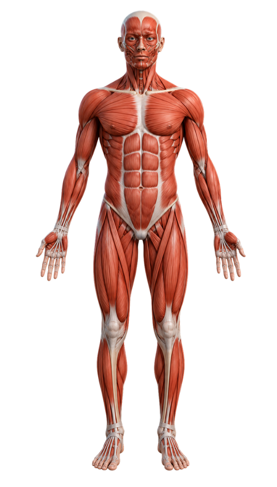
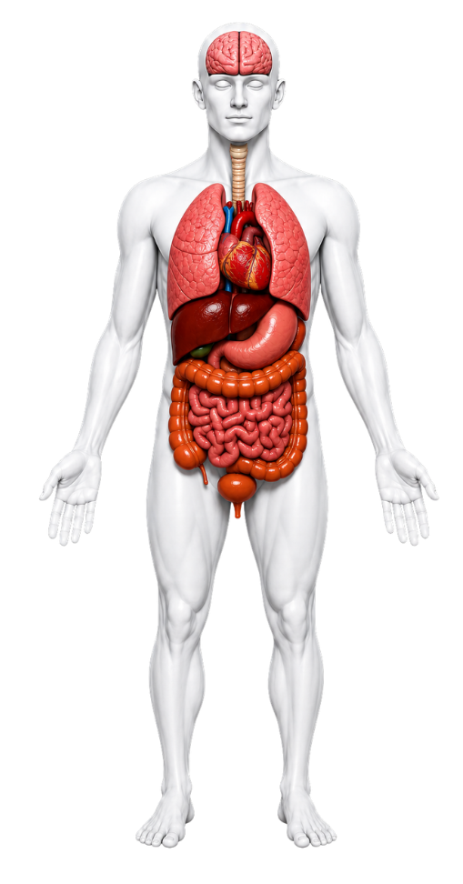

Virtual Human Anatomy
The skeletal system consists of 206 bones that support body structure, protect vital organs, produce blood cells and assist movement.
The skeletal system helps humans stand, walk, run and perform everyday activities. Without a healthy skeletal system, body movement and protection of internal organs would be difficult.
The muscular system contains more than 600 muscles responsible for movement, posture, balance and body heat production.


Organ systems work together to maintain life, regulate body processes and ensure proper body function.
The brain controls body activities, the heart pumps blood, the lungs provide oxygen, and the digestive system supplies nutrients. Together, these organs maintain life and body balance.
Visualize anatomy systems in a more effective way.
Learn through realistic virtual environments.
Engage with anatomy models and activities.
Evaluate knowledge after learning sessions.